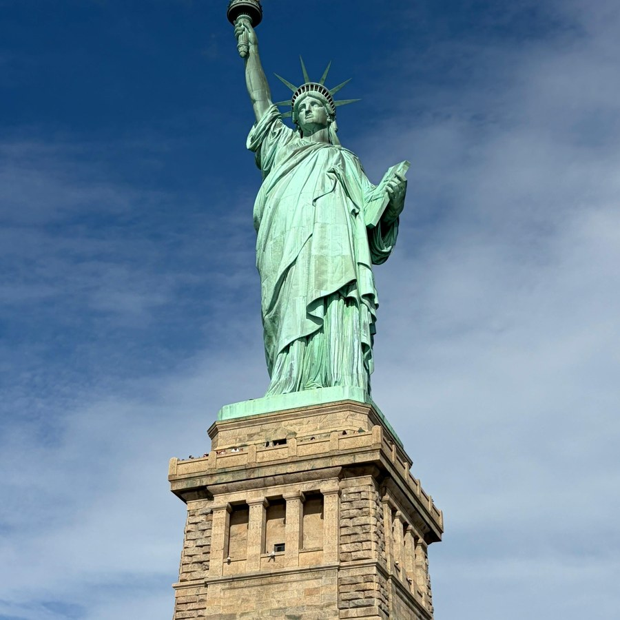
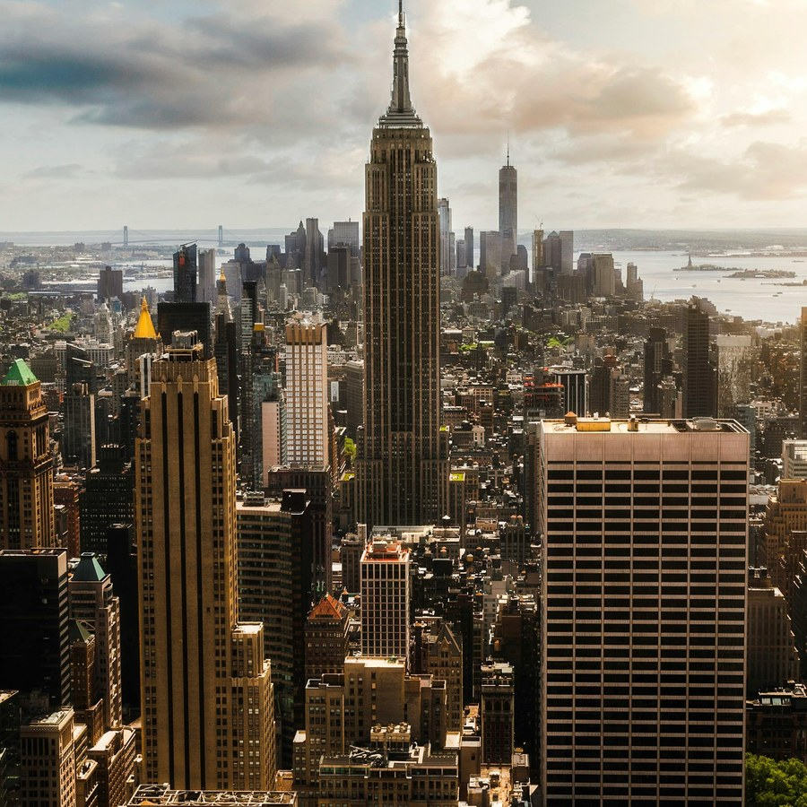
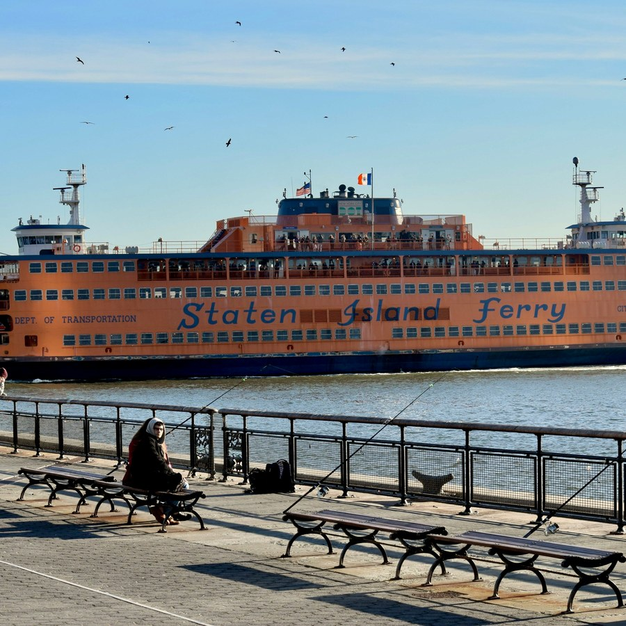
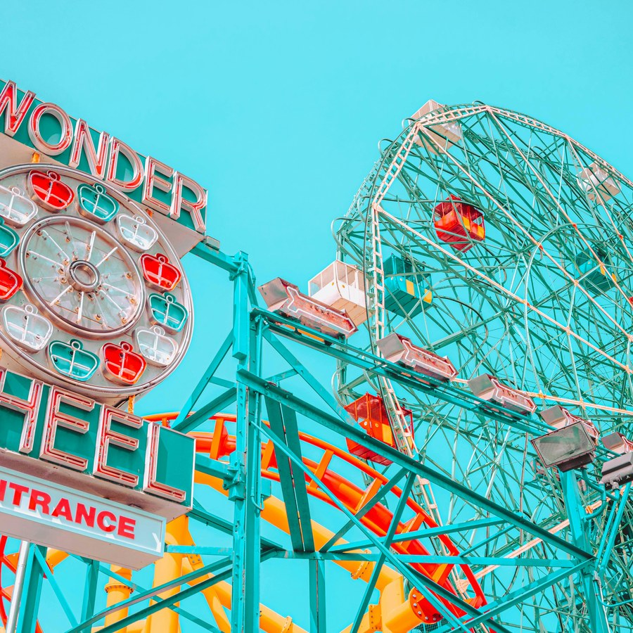
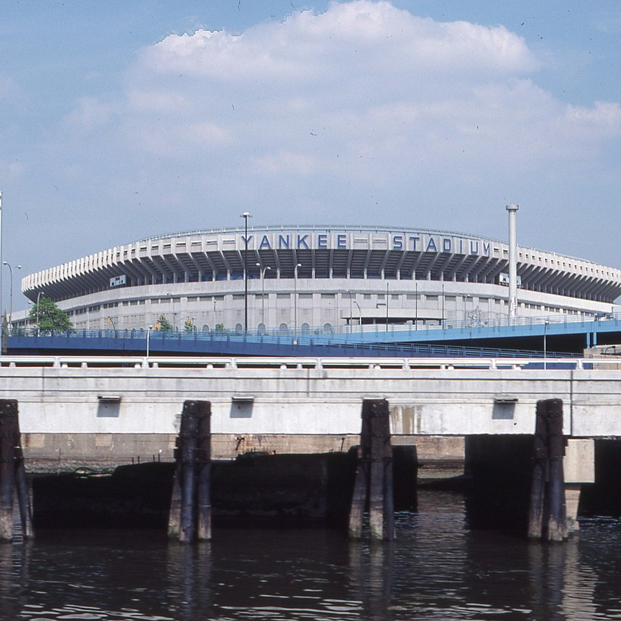
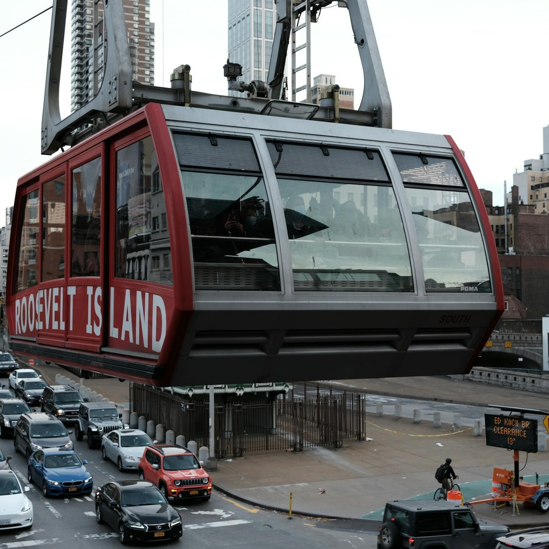

NYC Landmarks Virtual Tour
This site highlights some interesting landmarks across New York City's five boroughs.
Featured Landmark: Roosevelt Island Tramway

Photo by Raphael Loquellano
Explore the Landmarks





